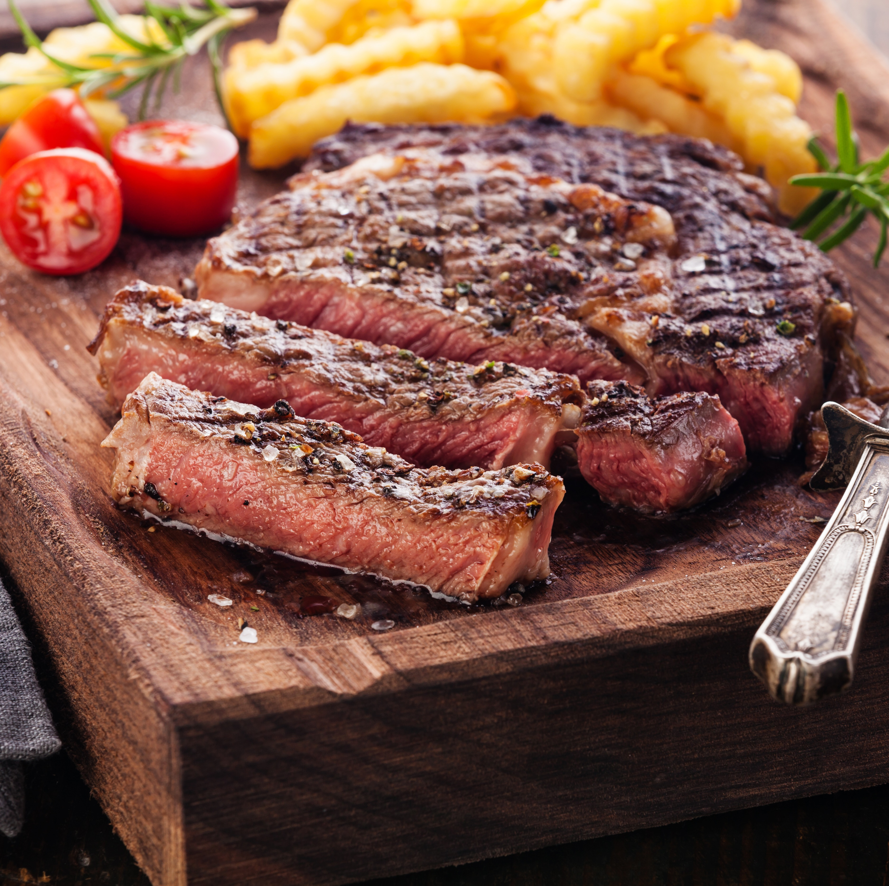

The Perfect Steak

Never burn that steak again
You don't need to be Salt Bae to cook the perfect steak
Follow these simple tips and you to will be the
MEAT MASTER
Ingredients
- 8oz - Red Cabernet Sauvignon(I prefer Rodney Strong vintage)
- 1-12oz Ribeye
- salted butter stick
- Rosemary sprigs
- Salt
- Sunflower Oil
- Mozzarella cheese balls
Steps
- Pour glasss of that red you got for a cooking buddy
- Take your ribeye out of the fridge and pat it dry. Let it get to room temp(or close to it)
- Begin to heat your pan(were going to want it at high temp and smoking)
- While pan is heating Take your butter and spread it over every side of the steak while
liberally coating all sides with salt and Pepper
- When pan is hot pour in 2 tablespoons of sunflower oil and let it heat up as well to smoking
- Drop in ribeye for 2.5 mins. Sprinkle the rosemary in at this time on top of meat
- Flip and let it sit for 2 mins on reverse side
- Make sure to sear edges of steak until crispy on edge as well
- Pull it out and let it rest until warm. Ccan apply mozz balls after a bit to let it melt
- Serve with your cab and favorite side
Back to the Recipes